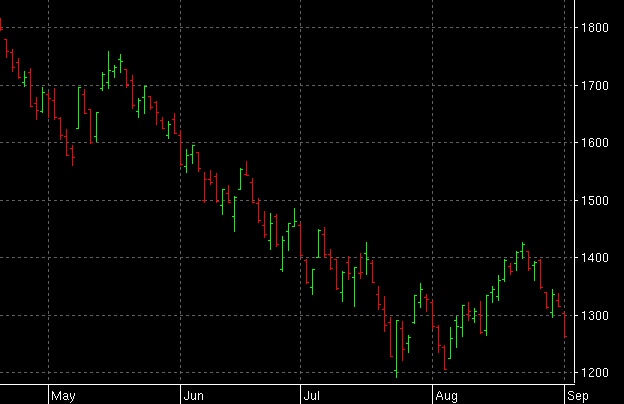

Frequently Asked Questions
Bar Chart
Bar
The standard OHLC bar chart. Color is used to show up, down or no change status from the previous bar. The ChartPrefs menu enables choice of various types of Bar Chart, e.g. Paint Bar.

Paint Bar
Same as the Bar chart type except that the colors used are based on
a user defined color formula. This chart type is used for showing
generalized support and resistance areas.

Here the above shot is a formula that creates a MACD. Step 1 uses
the REF plugin to get an array of Close bars. Step 2 uses the MACD
plugin using step 1 for the input. Step 3 creates an MA using step 2 as
the input, this will be the trigger plot. Step 4 uses the COMP plugin
to compare the MACD in step 2 with the trigger in step 3. If step 2 is
>= step 3, then the compare result is true. If not, the result is
false.
**CRITICAL**
In order for any formula to work, you must have a COMP step somewhere
in the formula to generate the boolean array that will generate the bar
colors. A TRUE value will plot an Up color. A FALSE result will plot a
Down color. Note also that the only step that is checked in the plot
column must be the COMP step. The checked step is the one that tells
qtstalker which step contains the logic for painting bars. If a non
COMP step or multiple steps are checked, the results will be unreliable.
Here is what the above formula will look like. Notice how when the red
MACD line rises
above the MACD yellow trigger line, the bars are green, meaning a buy
alert. When the MACD falls below the MACD trigger line, the bars are
colored red, meaning a sell alert.